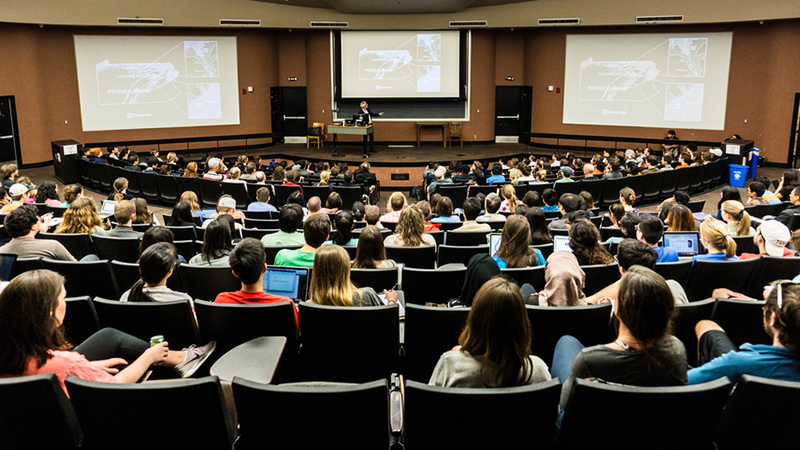

class: center, middle # Reading Code ??? My talk today is about reading code. This might strike you as a strange subject for a talk. "Reading code" seems like an almost trivial topic, like something that's not worth discussing or thinking very much about. We take it for granted that we can all look at a chunk of code and eventually figure out what it does. --- class: middle  ??? Certainly this was my attitude for a long time. I think it was engrained into me by the way computer science was taught when I was in college. I don't know if it's different now, but when I learned CS, there was a lot of focus on algorithms and design and programming languages, and almost no focus on the procedural aspects of how to program—how to use a text editor or an IDE effectively, for example. And the result of that was that when I got out of college and got my first programming job, the way I opened files in my text editor was that I would hit command-O, which brought up the operating system dialog for choosing a file, I would browse through the folder structure to find the file I wanted, and then I would click "OK". And my manager saw me doing this and was like "wait a minute, stop, no. we have to fix this. Your editor should let you open files by just typing part of their name. And if it doesn't, we need to get you a better editor." And so that was the day I learned how to open a file. I'd been programming in school and as a hobbyist for about 14 years at that point, and it had never occurred to me to learn how to open a file—simply because I didn't know what I was missing. --- class: middle 1. Using an editor is a _skill_. 2. Great programmers have _procedural_ as well as conceptual knowledge. ??? And so I actually learned two things from that experience. First, that using an editor is a skill that you can practice and get better at. I had never even thought to seek out a better way of opening files. Second, that great programmers like my manager have procedural knowledge as well as conceptual, intellectual knowledge. They know how to do things, at the level of tiny little micro-interactions with the software they're using, and streamlining all those little interactions lets them focus their mental energy where it really matters—on the hard task of solving problems with code. But this talk, of course, is not about opening files. There are thousands of micro-skills we use in our jobs that I'm not going to talk about. We're just going to focus on reading code. And there are a couple reasons I want to focus on reading to the exclusion of other activities. --- class: middle > The ratio of time spent reading versus writing is well > over 10 to 1. We are constantly reading old code as part > of the effort to write new code. <cite>Bob Martin</cite> ??? The first reason is that reading code is, empirically, what most programmers spend most of their time doing. In his book _Clean Code_, Bob Martin writes, <read quote> So if we use the best tools we can for _reading_ code, we'll get better and faster at programming. In comparison, there are relatively few gains to be obtained by upgrading the tools we use to _write_ code. --- <img src="gopher.png" alt="the Go gopher"/> ??? The second reason I want to focus on reading is that it seems to me that the tools we have for _understanding_ code are less used and less appreciated than the tools for writing code. And that's just because, if you're doing some editing task that requires a lot of repeated typing or error-prone manual changes, you'll probably look for a tool to help you do it faster and more reliably. But when we're reading code, on the other hand, it's often much harder to identify exactly where we are spending our effort or to imagine how we might do better. However, I think that once I show you some of these tools, you'll have no trouble thinking of places to apply them. So without further ado, let's look at some code.